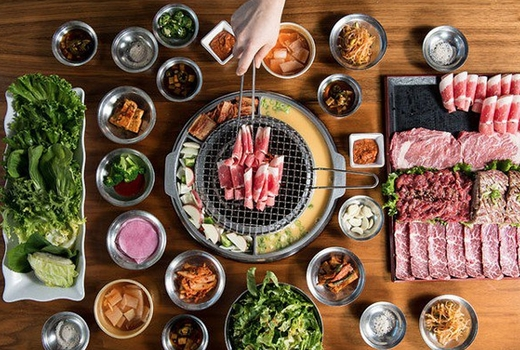

My name is Yuan, and I love food. I would love to tell you about my love of food. Here are a few dishes I really love.
Yuan's Cooking Thing
Chinese Hot Pot
Basically, you have a pot of deliciously flavored soup and you cook things in this pot of soup.
The soup boils the entire time you are eating, which can last for hours for a hot pot meal. Then you dip the food you cooked in a bowl of sauce(my favorite is sesame sauce).
Every winter, I hosted hot pot parties and invite 4 or 5 friends over. We'd eat this and drink saki. Best feeling ever!


Green papaya salad
Wonder what this is made from? It is made from shredded unripe papaya! This salad is spicy, juicy, savory, with crumbled toasted peanut on top. It is simply amazing!
So traditionally, this salad has a lot of chopped bird eye chili. Which I think is the best way to eat it.
Krorean BBQ
Korean BBQ, literally means "meat roast" in Korean.
Typically, you would have beef, pork and chicken. Often times, these meats are marinated to extreme deliciousness. Often times, they are marinated to be bulgogi,which is very common in Korea.
This dish is so good. I get a food baby almost every time when I eat it!


Tacos!
If you don't like tacos, I doubt we can be friends.
I met tacos when I came to America. We have had the most amazing and stable relationship. I had so many $2 tacos from Mission Taco. Every taco I eat, my relationship with tacos grow stronger and deeper.
Have hope. Eat tacos.